As the haze takes the harbor and then him, the poet refuses to leave, curses the ending, blesses the one he loved ('I trust that you'll be fine'), and chooses the door into a slow dance as the suite loops.
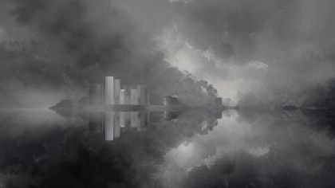
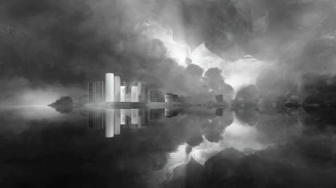

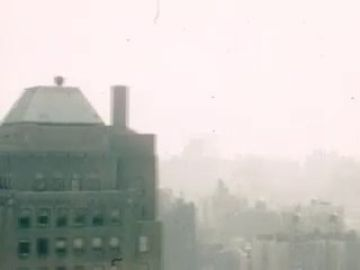
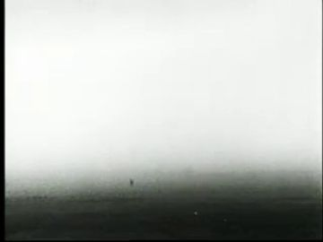
The poem
It opens as a plea, 'Don't make me leave', to go back where 'promises, hearts, spectrums of light-filled constellations are broken'. He escaped here for a reason: a 'sharpened key of answers', a 'more grounded bravado'. He curses whatever ended the moment ('damn you') and asks that it still 'feel love and lost'. Then a refusal: 'absent artificial escapes and machine learning strengths'. He will keep his highs and lows as resource materials, the impulse from battle scars, and the wisdom 'that brushes gray tones into our melanin'.
The turn is 14_L16, 'I trust that you'll be fine': anger becomes blessing. 'I escaped here for a reason' then repeats as a choice, not a flight. The images run from weather (haze, constellations) to the body (scars, gray in melanin) to a dance: 'two entwined muses' for 'a hot minute', and 'a genesis of a New Testament as it ends'. An ending that is also a beginning: the door closes and 01 starts again.
Look
First grey: layered vellum and tissue sheets rise over a photographic plate until only an ink eave-line is left. Then black: matte black card with one faint horizon strip, the puppet lit only by its own kraft edges and by the frames that flash past. Last, gold: one warm source through a door, spilling a cut yellow-gel wedge across the puppet, and archive silver inside the doorway.
Our best elements
The strongest things we already have for this poem: generated footage, Atlantis views, found film and painted kit sheets.
14.1b: the city becomes weather
figure-free, grey, already halfway to haze; the mirror line reads as the harbor
end state of the 14.1 dissolve
same composition as gen_91d2196345, so the two crossfade cleanly
14.1a opening wide; the motif_temple reel frame
white temple on water, grey light; links 13 to 14
answer inside the last lit window as the city goes
a real building dissolving into white haze: 'everything I built learns to be weather'
open_horizon strip in the void; the white-out that starts at the ground
a thin dark ground under a white sky; pure horizon

reel frame: motif_tambourine
figure-free, already on black; reads as a card

reel frame: motif_window (Out of Life)
the suite's own window, figure-free, teal; a strong callback
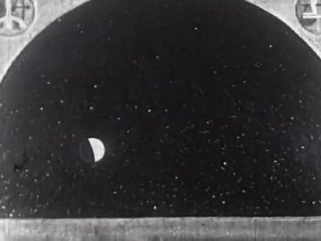
reel frame: motif_stars
stars and a crescent in an arched frame: it is already a window
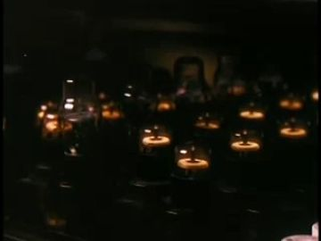
reel frame: motif_candle
many small flames on black, warm and readable at flash length

reel frame: motif_daisy
one daisy filling the frame, bright: reads in 3 frames
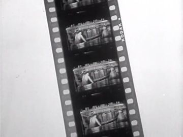
film_frame overlay / the reel itself
an actual strip of frames; gives the sprocket design
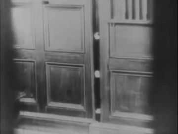
model for the vintage door card; the door's own surface
period panelled doors, flat-on, like a card
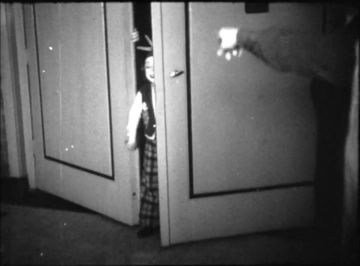
door-opening answer; 14.6a light and hand on the knob
a hand on the knob and a door swinging into light; matches the grip(vintage_door) beat
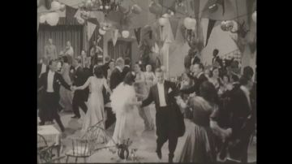
14.6b party inside the doorway
couples dancing under a garland of pennants: exactly the brief, and bright
What we need
- Haze climbing a body: all gen candidates have a figure (gen_2fe0abc837, gen_c57ff6431a); it must be a code mask on the puppet
- Burning hourglass and carnival ride reel frames: no usable footage (How Man Made Day's wheel diagram is a stand-in); reuse the 12 hourglass card and paint a lit ride wheel
- POET float bodies (profile/threequarter/front) and a slack-arms card
- POET_MUSE double: undefined; needs its own look so two identical puppets don't blur
- Gray-touched beard head for 14_L14–15
- Vintage party guests: templates only (1940s suit and tie, satin gown with gloves); no paired slow-dance card
- Black void ring floor and the noise-bent horizon strip
- Gramophone, paper lantern garland, champagne coupe cards
- Human B-roll highs/lows (laughing crowd, head in hands): few found; prefer archive over painted broll_everyday
Characters
POET kit →
the man who built this world, is taken by its haze, floats, watches his life as a reel, and chooses the door
Costume. red_black_sunglasses suit (black track jacket with red piping, black track trousers, Chelsea boots), but sunglasses OFF throughout (taken off in 13.5c; his eyes must watch the reel). In the haze, the piping is the last colour to grey out
Expressions. reluctant (jaw set, 14.2b), softened (jaw released, eyes lowered), calm (float), recognition (eyes open, watching the reel), joy (dance), awe (at the door), gray-touched beard variant (14_L14–15)
Hands. relaxed, open (half-open, swaying, 14.2a), open palm-up (passage), hidden (inside haze), grip (hand in hand with the double), grip(vintage_door knob)
Cards to paint. float bodies: profile, threequarter, front; front stand arms half-open; heads: reluctant, softened, recognition eyes-open no glasses, joy, awe, gray-touched beard; hands: palm-up open, grip knob, grip hand-in-hand, arms-up pair; back walk body
poet.14.action has blank panels for float profile/threequarter/front and dance threequarter/profile; hands open, hidden, grip, grip·vintage_door; vintage_door is its one prop. Missing: front stand for the haze climb, back walk into the crowd, palm-up hand for the passage. The WHO ref shows sunglasses on, but here they must be off.
Its action sheet for this poem is on Character Kits v2.
open the action sheet →| action | beats | how the card does it |
|---|---|---|
| taken from the ground up | stands arms half-open → haze passes knees, sway → hold at chest, jaw sets → jaw softens, chin lifts, head goes | front stand body, static; the haze is a mask moving up; swap reluctant → softened → calm-chin-up heads at the hold, never rotate |
| float | drift in → slow rise → fall like breath → hold | float replacement body (profile, then threequarter); whole card on a 4 s sine of 6 px; arms on loose shoulder brads lagging 2 frames |
| hand opens (passage) | loose fist at side → opens palm-up toward the door → stays open through the answer → light lands on it | forearm brad only; swap closed-hand card → palm-up card; gold-gel wedge over the hand |
| entwined dance | reach → hands catch → turn around a shared centre → land, both arms up | POET and double on one shared turntable brad at the joined hands; threequarter ↔ profile swap at half-turn; arms-up replacement cards to land |
| choosing the door | walk to door → grip knob, hold → door opens, light spills → walk in, back to us | threequarter_back walk; grip(vintage_door) hand pinned to the knob card so the door's hinge brad carries the arm; swap to back body inside |
POET MUSE kit →
his double in 'two entwined muses': the self he dances with before letting go
Costume. the same puppet and suit, repainted in haze grey: grey-washed skin highlights, grey-silver piping, no sunglasses; the 'gray tones' made visible
Expressions. joy, calm
Hands. open, grip (hand in hand)
Cards to paint. grey-tone repaint of the threequarter_back and profile bodies; grey head joy
No sheet; the data calls it a second instance of POET. Two identical puppets merge in silhouette, so a grey-tone double reads better and carries the poem's 'gray tones' line.
No action sheet exists for this poem yet.
| action | beats | how the card does it |
|---|---|---|
| turn and land | reach back → catch his hand → turn → land arms up → dissolves as the door appears | second instance on the shared brad; threequarter_back ↔ profile swap; fades as a vellum overlay rises |
PARTY, CLUB AND DJ kit →
vintage party guests dancing cheek to cheek in romantic slow motion behind the door
Costume. vintage_party: 1940s suits and ties; satin gowns with long gloves; one guest holds a champagne coupe behind a partner's back
Expressions. calm, eyes closed, joy
Hands. open, pinch(champagne_coupe)
Cards to paint. paired slow-dance cards (threequarter, threequarter_back, profile, back); pinch(coupe) hand
party.14.action lays out dance threequarter / threequarter_back / profile / back and open + pinch(coupe) hands, all blank, with no WHO painting. vintage_party packs are front/back/profile templates.
Its action sheet for this poem is on Character Kits v2.
open the action sheet →| action | beats | how the card does it |
|---|---|---|
| slow dance | sway left → sway right → head settles on shoulder → hold | paired couple as one card with a single hip brad, rocked ±3° at half speed; head-on-shoulder replacement head |
BROLL EVERYDAY kit →
the highs and lows of ordinary life in the reel
Costume. plain everyday clothes, any era
Expressions. joy (arms up in a crowd), sad (head in hands)
Hands. open, cup (head in hands)
Cards to paint. front arms-up body; sit head-in-hands body
No sheet. At 'absent artificial escapes' archive people are truer than painted extras, so use these cards only if no archive is found.
No action sheet exists for this poem yet.
| action | beats | how the card does it |
|---|---|---|
| head in hands | sit → hands rise → face drops into them → hold | sit body, forearm brads, cupped-hands card over the face |
Props
Sorted by priority. Each has its design, how to build it, the references found in the archive and our footage, and a prompt for its card sheet.
burning hourglass from Reunion
18 cm brass-and-glass card, sand in upper bulb, flame at the neck; states: full, burning, empty
References found
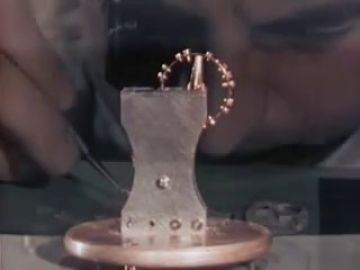

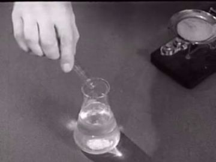

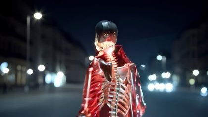
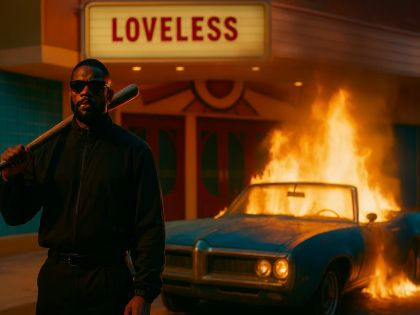
Generation prompt
Prop card sheet: brass hourglass, 18 cm, with a small flame at its waist; flat corrugated-cardboard card, gouache + confident ink line, raw kraft cut edge, brass brads where it hinges, flat-on even light, plain background; cards: sand full, sand running with flame, empty.
sprocketed film-frame card that holds each reel motif
100 cm wide black film-strip card with punched sprocket holes and a window; states: single frame, strip of three
Generation prompt
Prop card sheet: a strip of 35 mm film drawn large, black base, punched sprocket holes, empty frame windows; flat corrugated-cardboard card, gouache + confident ink line, raw kraft cut edge, brass brads where it hinges, flat-on even light, plain background; cards: single frame, strip of three frames, frame line.
old panelled wooden door in its frame, alone in the black, warm light under it
210 cm dark-oak card with four ink-lined panels, brass knob brad, hinge brad on the frame; states: dark, light-line under, ajar a hand's width, half open, wide open, closing
References found


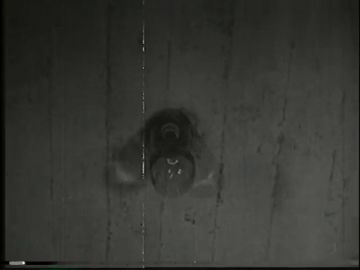


Generation prompt
Prop card sheet: old four-panel wooden door in its frame, dark oak with a brass knob, standing alone; flat corrugated-cardboard card, gouache + confident ink line, raw kraft cut edge, brass brads where it hinges, flat-on even light, plain background; cards: frame only, door closed, door with a gold light line under it, door ajar a hand's width, door half open, door wide open (empty doorway for an insert).
paper garland of round lanterns across the party ceiling
400 cm string of pale paper lanterns and pennants; states: unlit, glowing
References found
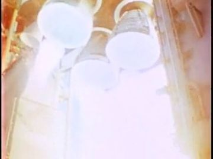
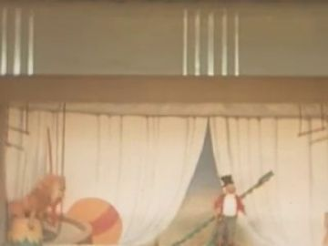
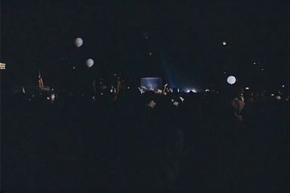
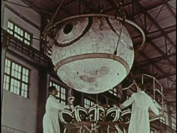


Generation prompt
Prop card sheet: paper garland of round lanterns and small pennants on a string, 400 cm; flat corrugated-cardboard card, gouache + confident ink line, raw kraft cut edge, brass brads where it hinges, flat-on even light, plain background; cards: garland unlit, garland glowing, single lantern.
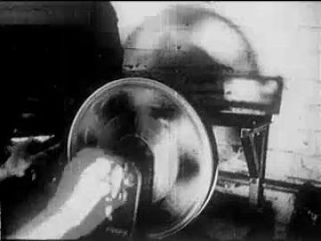
brass-horn gramophone playing
60 cm wooden box and brass horn, record disc on a brad so it spins
References found
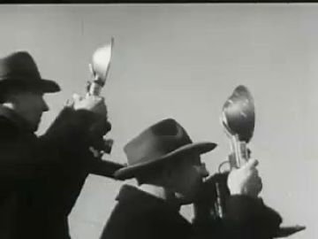
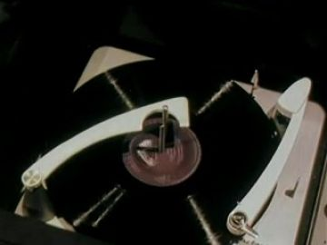

Generation prompt
Prop card sheet: brass-horn gramophone, 60 cm, wooden case; flat corrugated-cardboard card, gouache + confident ink line, raw kraft cut edge, brass brads where it hinges, flat-on even light, plain background; cards: gramophone body, horn, record disc (separate, to spin).
lit pillar candle
20 cm cream pillar, two flame cards
References found
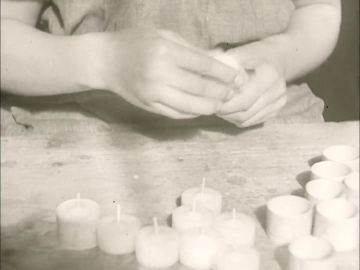


Generation prompt
Prop card sheet: cream pillar candle, 20 cm; flat corrugated-cardboard card, gouache + confident ink line, raw kraft cut edge, brass brads where it hinges, flat-on even light, plain background; cards: candle unlit, flame A, flame B.
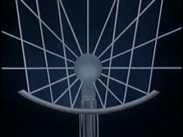
lit carnival ride wheel from Magic Ride
100 cm spoked wheel card with punched bulb holes; states: unlit, lit
References found
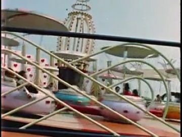
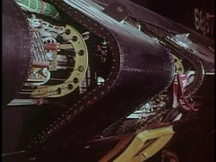
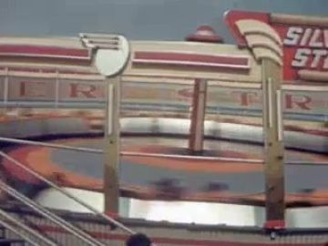

Generation prompt
Prop card sheet: carnival ride wheel with spokes and small gondolas, punched bulb holes on the rim; flat corrugated-cardboard card, gouache + confident ink line, raw kraft cut edge, brass brads where it hinges, flat-on even light, plain background; cards: wheel unlit, wheel lit (bulbs gold), single gondola.
vintage champagne coupe
15 cm glass outlined in white ink with gold liquid
References found
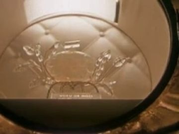
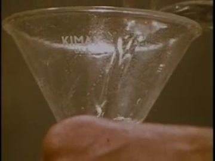
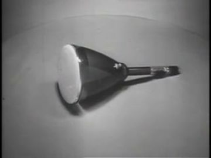
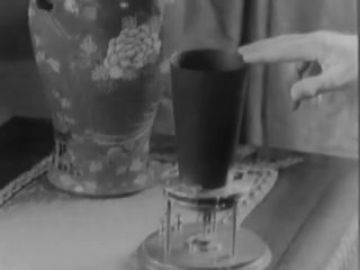
Generation prompt
Prop card sheet: vintage champagne coupe, 15 cm, clear glass in white ink line, pale gold wine; flat corrugated-cardboard card, gouache + confident ink line, raw kraft cut edge, brass brads where it hinges, flat-on even light, plain background; cards: full coupe, held coupe.
Places
harbor_atlantis_wide
the whole harbor at dusk going grey: towers, white temple, pier arm, all turning to weather; he stands small on the quay, back to us
Where the archive opens: the last lit window in the towers (Travel/Cities 1947); the mirror-water band (only for bright film)
References: our footage, Atlantis views, found film

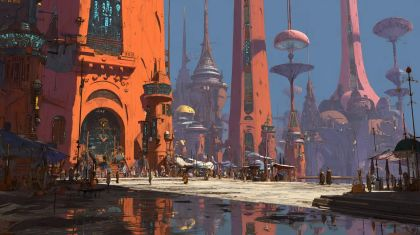


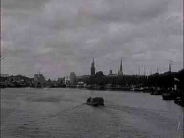
No plate yet.
black_void
all black, no walls; one faint noise-bent horizon of light; later a ring of floor and a door
Where the archive opens: the vintage doorway (best: vertical, bright); reel frame windows; the horizon strip
References: our footage, Atlantis views, found film


Generation prompt
Pure black space with a single thin faint horizon line of pale light, slight film grain, no objects, no people
No plate yet.
broll_life
the reel: a film strip carrying the suite's objects and real human moments past him, faster and faster
Where the archive opens: each reel frame window
References: our footage, Atlantis views, found film


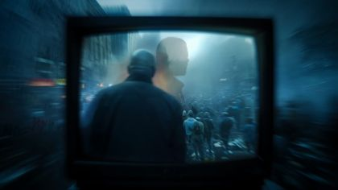


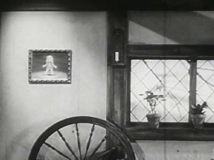
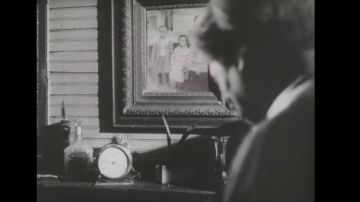
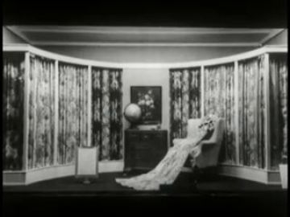

vintage_party
an old-time party room behind the door: warm low light, pennant garland, couples cheek to cheek in slow motion; a dark shut window on one wall
Where the archive opens: the doorway itself (archive fills it); the shut window on the wall (stays dark: he no longer needs it)
References: our footage, Atlantis views, found film


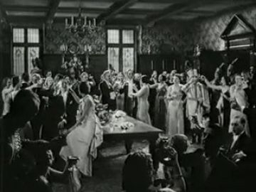
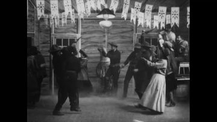
Effects
| effect | how, in this cut-out world |
|---|---|
| haze_rising / dissolve_to_haze | stacked tissue and vellum sheets slide up over the plate while it crossfades gen_69ee5bb28b → gen_91d2196345 → gen_bb8e6e2acf; the temple eave remains as an ink line on clear acetate, then lifts away |
| haze_climbs_body | a torn-vellum mask edge rises up the puppet; below it the card desaturates to haze grey with an Orange Haze amber rim; the red piping is the last colour to go; hold 1.5 s at the chest |
| breathing_black / open_horizon | 1.00–1.02 scale breathing on a 4 s cycle with grain; Dust Storm 1936 cropped to a thin horizon band that never closes |
| film_frame / flash_cut | the reel_frame strip slides; holds shrink 12 → 8 → 5 → 3 → 2 frames, with black frame-lines between; projector flicker on the puppet |
| victory_burst | punched paper stars and confetti burst from the joined hands, falling in slow code |
| door_light_spill | a yellow-gel wedge card, additive, widening with the door angle; the puppet swaps to a gold-rimmed version where the wedge hits |
| slow_motion / warm_glow | archive party at 40% with frame blending; cut-outs on 2s at half speed; gold bloom on highlights |
| fade_to_black | the door closes; the light line under it shrinks to a point and goes; hold black, then 01 begins |
The puppet passage
his line · 14_L16
“I trust that you'll be fine.”
the archive answers · Don't Be Afraid (1953)
“Someone you're fond of and trust.”
a hand that opens and stays open · the doorway of the old vintage door that materializes in the black, opened a hand's width then wider
Keep. L16 'I trust that you'll be fine' answered by Don't Be Afraid 1953, 'Someone you're fond of and trust'. The hand opening palm-up and staying open is a clean held gesture, and the doorway in the black is the ideal surface: vertical, bright, the only thing in the frame.
Better. Make the door big and near, two-thirds of frame height, built from the Electric House 1922 panel design so it reads as a card. Open it a hand's width as he speaks, then wider on 'fond of', so the archive's brightness grows with the gesture. Let the gold-gel wedge fall across the open palm. Carry emotion with a head swap (reluctant → softened) rather than rotation, and keep him standing, not floating, so the palm stays still.
Other lines that could carry one:
- 14_L01 'Don't make me leave': one hand reaches back toward the city and stops short; Travel/Cities 1947 (building dissolving in haze) opens in the last lit tower window of gen_91d2196345
- 14_L08 'Whatever has terminated this moment, damn you': grip into a fist, head lowers; Dust Storm 1936's white-out fills the horizon band and brightens on 'damn you'
- 14_L14–15 'wisdom that brushes gray tones into our melanin': fingertips to his beard, held, with the head swapped for the gray-touched card; Care of the Hair and Nails 1951 (arch_019e25f6-802c) plays in a single reel frame beside him
- 14_L18 'Our dance together is a victory': hands gripped with the grey double, still for a beat before the turn; Under Western Stars dancers play in the ring of floor beneath them like a record
Scene ideas
- Weather by plates: POET's back-view cut-out stands on a quay card while gen_69ee5bb28b crossfades to gen_91d2196345 and gen_bb8e6e2acf; the white temple's eave stays an ink line on acetate for 1 s, then lifts with the tissue
- The machines unplug: on 14_L10 'absent artificial escapes and machine learning strengths' the reel drops every generated frame and runs only archive film (Scrooge 1935 window, Heavenly Bodies, The Reasons Why candles, Muscatatuck daisy), so the film itself does what the line says
- The reel as a How You See It 1936 strip sliding past the floating puppet; gen_a0ef973cb6 (tambourine) and gen_a63bb494b1 (window) are the only generated callbacks before the cut-off
- Gray in the beard: one head swap in the whole poem, to a card with gray brushed into the beard, held on 'melanin'; the double is painted in the same gray
- The door arrives: first as a bright vertical slit in black (Harvest of the Years, arch_7ee2fb8e-98c9), which becomes the panelled door card; De Joodsche invalide 1939's hand-on-knob shot cut in as the knob turns
- Into the archive: through the doorway, His Royal Highness 1932's crowded ballroom and Under Western Stars' pennants; paper couples dance in front, and he walks between them until his cut-out passes behind the film plane and is gone
- Loop: the door closes, the gold line goes out, and the same door card hangs in black as the first frame of 01
References to look for
| what | where to look |
|---|---|
| René Magritte, 'La Victoire' (1939) | a door standing open in the sky with a cloud passing through: haze, door and 'victory' in one image |
| Norman McLaren, 'Pas de deux' (1968) | a dancer doubled in stroboscopic white on black: the two entwined muses |
| Roy DeCarava, couples dancing (Harlem, 1950s) | slow dances in low warm light, faces close: the party's mood |
| Archibald Motley, 'Saturday Night' / 'Blues' | warm crowded party interiors with flattened, cut-out-like figures |
| Hiroshi Sugimoto, 'Theaters' | a single bright rectangle in black: the doorway and reel-frame light |
| Lawrence Raab, 'Walking Alone' (in the treatment) | the tone of a reluctant leave-taking |
| archive: 1920s–40s ballroom and dance-hall films | 'ballroom', 'dance hall', 'slow dance', 'cheek to cheek', 'party 1930s amateur film' |
| archive: fog and haze over cities and harbors | 'fog rolls in harbor', 'smog city 1940s', 'mist over water timelapse' |
Our footage for this poem
The 20 generated clips and 8 Atlantis views closest to the poem (CLIP, image against its treatment and lines).


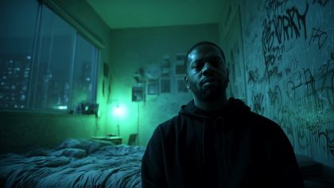
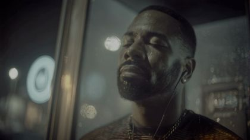


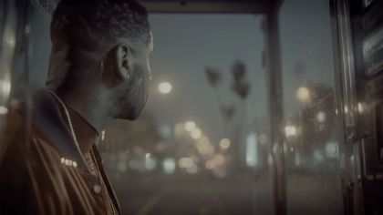


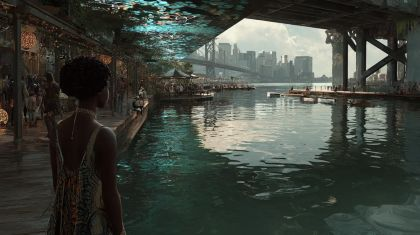


The kit
| status | kind | item | source |
|---|---|---|---|
| need | body | POET float bodies (profile/threequarter/front), front stand, back walk | to generate into poet.14.action |
| need | body | POET_MUSE grey-tone double | repaint of the threequarter_back and profile bodies |
| need | fx | haze-climb mask, gel spill, flash-cut timing | code + paper |
| need | hand | POET hands: palm-up open, grip knob, hand-in-hand, arms-up | to generate |
| need | prop | vintage door (6 states) | to generate; ref Electric House 1922 |
| need | prop | reel frame strip | code-drawn; ref How You See It 1936 |
| need | prop | garland, gramophone, coupe | to generate |
| need | set | black void + horizon strip + ring floor | code + Dust Storm 1936 |
| partial | body | vintage party paired slow-dance cards | party.vintage_party templates |
| partial | head | POET heads: reluctant, softened, recognition (no glasses), joy, awe, gray-touched beard | head plates exist; paint expressions |
| partial | prop | reel motifs: hourglass, ride | hourglass card from 12; ride wheel to generate |
| have | body | POET red_black body packs | existing pack poet.red_black_sunglasses.* |
| have | prop | reel motifs: window, tambourine, temple | assets/gen_a63bb494b1.jpg, assets/gen_a0ef973cb6.jpg, assets/gen_69ee5bb28b.jpg |
| have | prop | reel motifs: stars, candle, daisy, field | Heavenly Bodies, The Reasons Why 1959, Muscatatuck 2005, Golden Harvest 1950 |
| have | set | harbor-to-haze plates | assets/gen_91d2196345.jpg, assets/gen_bb8e6e2acf.jpg |
| have | set | party room | Under Western Stars, His Royal Highness 1932 |
| have | sound | dry VO 14 (52.0 s spoken, holds of 1.7 s after 'materials.' and 'defeats.') | Hot Minute VO mixdown (RY) |